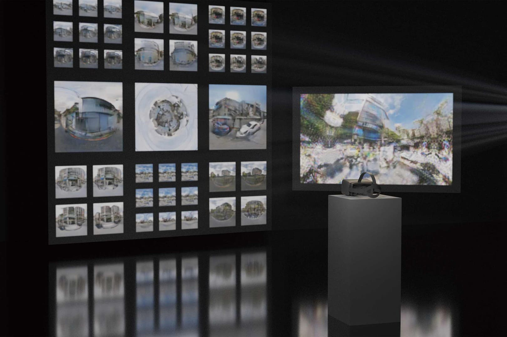
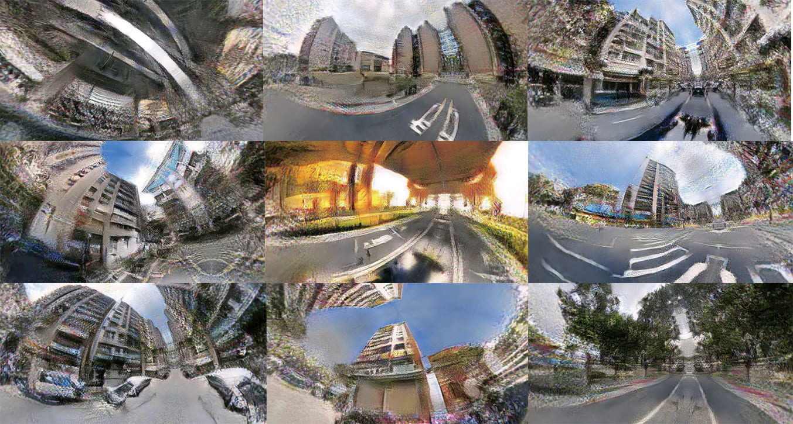
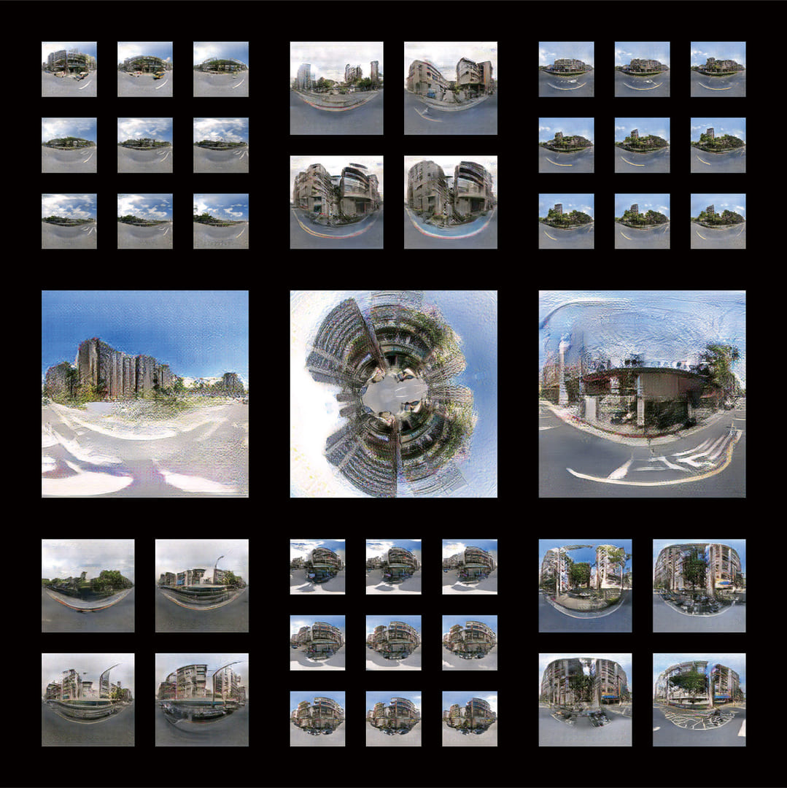
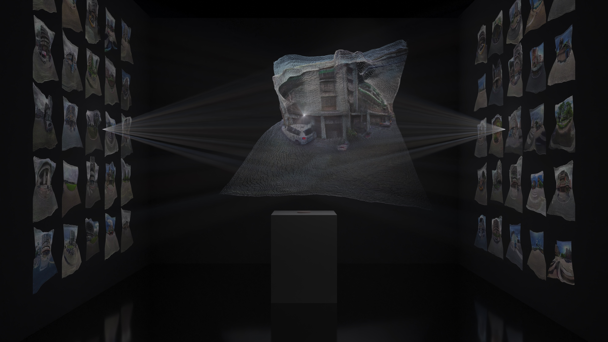
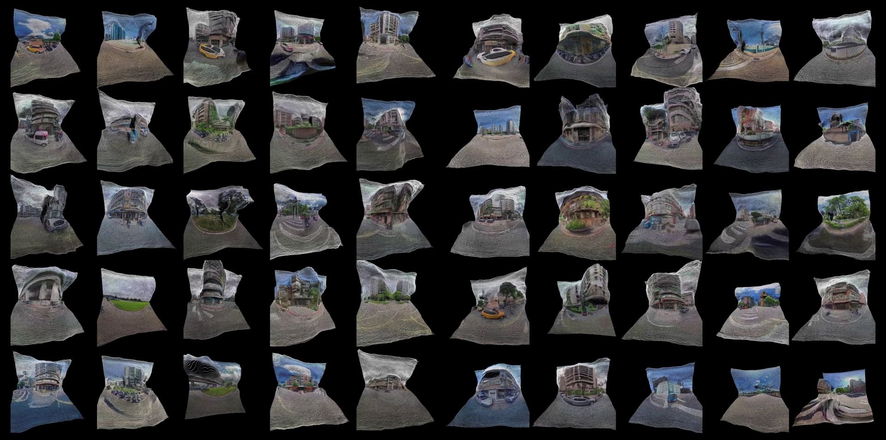
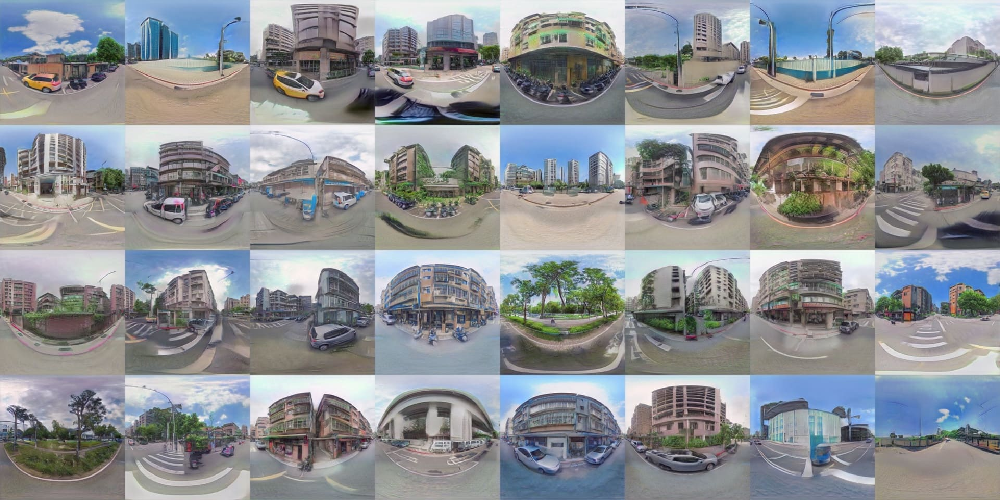

GAN Training
Latent-space Interpolation
Image Enhancement
Point-Cloud Mapping
Virtual Reality
Dataset Curation
Taipei-Topia responds to the accelerated, data-driven rhythms of contemporary life in which images appear and vanish in real time. Rather than reconstructing Taipei, the project generates unfamiliar yet eerily recognizable cityscapes built from machine-learned patterns. The work explores “nowhere”—an algorithmic condition shaped by spatial dislocation, fragmented memory, and the hyper-speed visuality described by Virilio. By transforming street-level datasets into non-existent urban forms, the project reflects how digital systems reshape the psychological experience of place, producing environments that feel both intimate and unlocatable.
Over 100,000 Taipei street-view panoramas were curated and standardized for model training. A DCGAN model generated initial synthetic visuals, with latent-space interpolation producing smooth spatial transitions. A pre-trained enhancement model refined resolution and detail. Two exhibition formats materialize the results:
1. VR Environment — generated landscapes were rendered as 360° panoramas and stereographic “little planet” images, immersing viewers in a shifting digital terrain without fixed coordinates.
2. Depth-based Point-cloud Visualization — depth maps derived from the AI-generated images were combined with textures to form navigable 3D fragments.
Together, these methods create an experiential “nowhere,” expanding the aesthetic and spatial possibilities of AI-generated urban memory.
     